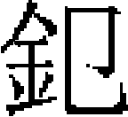

輿服志二
皇帝璽寶 諸王以下印章 牌面 輿輅 儀仗
璽寶。中統二年，定用御寶制，宣命：一品、二品用玉，三品至五品用金。其文曰「皇帝行寶」者，即位時所製，惟用之誥敕。别鑄「宣命金寶」行之。至元六年，作玉璽大小十鈕，其制未聞。天曆二年，作玉璽二：一曰「天曆之寶」，一曰「金章國寶」，命虞集篆文。至正元年，詔刻「宣文」、「至正」二寶。九年，作「至正珍秘」小玉印，又作小玉璽二：一曰「明政殿寶」，一曰「洪禧」，命楊瑀篆文。「洪禧」璽純白，龜鈕黑色。
皇太后、皇后皆玉寶，皇太子金寶。至大元年，仁宗爲皇太子受金寶，遣使求四方經籍，以玉刻印章，近侍掌之。
諸王印，三寸二分，赤金二百十三兩九錢。金印三寸一分五釐，赤金二錠六兩。金鍍銀印准上，白銀八十三兩，鍍金赤金八錢。
駙馬印，正二三台，銀五十六兩四錢。金印三等：獸紐、螭紐、驢紐。金鍍銀印二等：駞紐、龜紐。銀印：龜鈕。
正一品印，三寸三台，銀八十兩五錢。從一品，二寸八分三台，銀八十兩。正二品，二寸六分兩台，銀六十五兩。從二品，二寸五分兩台，銀六十五兩。正三品，二寸四分，銀五十五兩。從三品，二寸三分，銅三斤十二兩。正四品，二寸二分，銅三斤八兩。從四品，二寸一分，銅三斤四兩。正五品，二寸五釐，銅三斤。從五品，二寸，銅二斤十四兩。正六品，一寸九分五釐，銅二斤十一兩。從六品，一寸九分，銅二斤十兩。正七品，一寸八分五釐，銅二斤八兩。從七品，一寸八分五釐，銅二斤四兩。正八品，一寸七分五釐，銅二斤四兩。從八品，一寸七分，銅二斤二兩。正九品，一寸六分五釐，銅二斤。從九品，一寸六分，銅一斤十四兩。
凡印文，皆用蒙古字。蒙古、色目人或不能執筆花押，例以象牙或木刻印之。宰輔及近侍官至一品者，奉命則用玉圖書押字，非特賜不敢用。
軍官牌面。正一品，三珠虎符。從一品，二珠虎符。正、從二品，一珠虎符。正、從三品，虎符。正、從四品，正、從五品，俱金牌。正、從六品，正、從七品，俱銀牌。
至元十四年，命中外軍官所佩金銀符，以絲色繫於肩掖，庶無褻瀆。著爲令。十五年，詔：「虎符舊用畏兀兒字，今易以國字。」二十一年，更定虎符。
大德十一年，命給金虎符等，必由中書省。時省臣言：「舊制：金虎符及金銀符，典瑞院掌之，給則由中書省，事已則復歸典瑞院。今出入多不由中書，下至商人，結納近侍奏請，以致泛濫，出而無歸。臣等請覈之。自後除官及奉使應給者，非由中書省勿給。」從之。
又有海青金銀符，有奏則馳馹以聞。中統二年，以海青銀符二、海青金符十，給中書省，量軍國事情緩急，付馳馹者佩之。
至天曆元年，以黄金符鐫文曰「翊忠徇義廸節同勳」，賜西域親軍副都指揮使欽察。後至元五年，以七寶玉書龍虎金符，賜丞相伯顔。則一時特典，非常制。
至治元年，詔中書及太常禮儀院禮部定制鹵簿玉輅，以平章政事張珪、留守王伯勝、將作院使明里董阿、侍儀使移剌徒滿，董其事。是年，玉輅成。明年，親祀太廟，御之。復命造四輅，工未成而罷。
玉輅：青質，金裝，青緑藻井，栲栳輪蓋。外施金裝雕木雲龍，内盤碾玉福海圓龍一，頂上匝以金塗鍮石耀葉八十一。上圍九者二，中圍九者三，下圍九者四。頂輪衣三重，上二重青繡雲龍瑞草，下一重無文。輪衣内黄屋一，黄素 絲瀝水，下周垂朱絲結網，青絲繡小帶四十八，帶頭綴金塗小銅鈴，青絲繡絡帶二。頂輪平素面夾用青絲。蓋四周垂流蘇八，飾以五色茸線結網五重，金塗銅鈸五，金塗木珠二十有五。又繫玉雜佩八，珩璜衝瑀全，金塗鍮石鉤掛十六，黄茸貫頂天心直下十字繩二，各長三丈。蓋下立朱漆柱四。柱下直平盤，虚櫃，中櫺三十，下外桄二。漆繪犀、象、鸚鵡、錦雉、孔雀，隔窠嵌裝花板。櫃周朱漆句闌，雲拱地霞葉百七十有九，下垂牙護泥虚板，並朱漆畫瑞草。句闌上碾玉行龍十，碾玉蹲龍十，孔雀羽臺九，水精面火珠七，金圈焰銅照八。輿下周垂朱絲結網，飾以金塗鍮石鐸三百，綵畫鍮石梅萼嵌網眼中。輿之長轅三，界轅句心各三，上下龍頭六。前轅引手玉螭頭三，並繫以蹲龍。後轅方罨頭三，桄頭十六，絟以蹲龍三。轅頭衡一，兩端玉龍頭二，上列金塗銅鳳十二，含以金塗銅鈴。輿之軸一，輪二。軸之挲羅二，明轄蹲龍絟，並青漆。輪之輻各二十四［一］，轂首壓貼金塗銅轂葉八十一，金塗鍮石擎耳戀攀四。櫃之前，朱漆金裝雲龍輅牌一，牌字以玉裝綴。輅之箱，四壁雕鎪漆畫填心隔窠龜文華板。上層左畫青龍，右畫白虎，前畫朱雀，後畫玄武。輅之前額，玉行龍二，奉一水精珠，後額如之。前兩柱青茸鈴索五。貼金鸞和大響銅鈴十，金塗鍮石雙魚五。下朱漆軾櫃一，櫃上金香毬、金香寶、金香合，銀灰盤各一，並黄絲綬帶。輅之後，朱漆後轛一，金塗曲戌，黄絲銷金雲龍門簾一，緋絲繡雲龍帶二。輅之中，金塗鍮石較展玉龍椅一，靠背上金塗圈焰玉明珠一。左建太常旂，十有二斿，甘羅繡日、月、五星、升龍。右建闒戟一，九斿，青羅繡雲龍。中央黄羅線青黑黼文兩旗，綢杠，並青羅，旗首金塗鍮石龍頭二，金塗銅鈴二，金塗鍮石鈸青纓緌十二重，金塗木珠流蘇十二重。龍椅上，方座一，緑褥一，皆錦。銷金黄羅夾帕一，方輿地褥二，句闌内褥八，皆用雜錦綺。青漆金塗鍮石鉸葉踏道一，小褥五重。青漆雕木塗金龍頭行馬一，小青漆梯一，青漆柄金塗長托叉二，短托叉二，金塗首青漆推竿一，青茸引輅索二，各長六丈餘，金塗銅環二，黄茸綏一。輅馬、誕馬，並青色。鞍轡鞦勒纓拂靷，並青韋，金飾。誕馬青織金絲屜四。青羅銷金絹裏籠鞍六。蓋輅黄絹大蒙帕一，黄油絹帕一。駕士平巾大袖，並青繪絲爲之。
絲瀝水，下周垂朱絲結網，青絲繡小帶四十八，帶頭綴金塗小銅鈴，青絲繡絡帶二。頂輪平素面夾用青絲。蓋四周垂流蘇八，飾以五色茸線結網五重，金塗銅鈸五，金塗木珠二十有五。又繫玉雜佩八，珩璜衝瑀全，金塗鍮石鉤掛十六，黄茸貫頂天心直下十字繩二，各長三丈。蓋下立朱漆柱四。柱下直平盤，虚櫃，中櫺三十，下外桄二。漆繪犀、象、鸚鵡、錦雉、孔雀，隔窠嵌裝花板。櫃周朱漆句闌，雲拱地霞葉百七十有九，下垂牙護泥虚板，並朱漆畫瑞草。句闌上碾玉行龍十，碾玉蹲龍十，孔雀羽臺九，水精面火珠七，金圈焰銅照八。輿下周垂朱絲結網，飾以金塗鍮石鐸三百，綵畫鍮石梅萼嵌網眼中。輿之長轅三，界轅句心各三，上下龍頭六。前轅引手玉螭頭三，並繫以蹲龍。後轅方罨頭三，桄頭十六，絟以蹲龍三。轅頭衡一，兩端玉龍頭二，上列金塗銅鳳十二，含以金塗銅鈴。輿之軸一，輪二。軸之挲羅二，明轄蹲龍絟，並青漆。輪之輻各二十四［一］，轂首壓貼金塗銅轂葉八十一，金塗鍮石擎耳戀攀四。櫃之前，朱漆金裝雲龍輅牌一，牌字以玉裝綴。輅之箱，四壁雕鎪漆畫填心隔窠龜文華板。上層左畫青龍，右畫白虎，前畫朱雀，後畫玄武。輅之前額，玉行龍二，奉一水精珠，後額如之。前兩柱青茸鈴索五。貼金鸞和大響銅鈴十，金塗鍮石雙魚五。下朱漆軾櫃一，櫃上金香毬、金香寶、金香合，銀灰盤各一，並黄絲綬帶。輅之後，朱漆後轛一，金塗曲戌，黄絲銷金雲龍門簾一，緋絲繡雲龍帶二。輅之中，金塗鍮石較展玉龍椅一，靠背上金塗圈焰玉明珠一。左建太常旂，十有二斿，甘羅繡日、月、五星、升龍。右建闒戟一，九斿，青羅繡雲龍。中央黄羅線青黑黼文兩旗，綢杠，並青羅，旗首金塗鍮石龍頭二，金塗銅鈴二，金塗鍮石鈸青纓緌十二重，金塗木珠流蘇十二重。龍椅上，方座一，緑褥一，皆錦。銷金黄羅夾帕一，方輿地褥二，句闌内褥八，皆用雜錦綺。青漆金塗鍮石鉸葉踏道一，小褥五重。青漆雕木塗金龍頭行馬一，小青漆梯一，青漆柄金塗長托叉二，短托叉二，金塗首青漆推竿一，青茸引輅索二，各長六丈餘，金塗銅環二，黄茸綏一。輅馬、誕馬，並青色。鞍轡鞦勒纓拂靷，並青韋，金飾。誕馬青織金絲屜四。青羅銷金絹裏籠鞍六。蓋輅黄絹大蒙帕一，黄油絹帕一。駕士平巾大袖，並青繪絲爲之。
至治元年，英宗親祀太廟，詔中書及太常禮儀院、禮部定擬制鹵簿五輅。以平章政事張珪、留守王伯勝、將作院使明里董阿、侍儀使乙剌徒滿董其事。是年輅成，明年，親祀御之。後復命造四輅，工未成而罷。
金輅：赤質，金裝，青緑藻井［二］，栲栳輪蓋。外施金裝雕木雲龍，内盤真金福海圓龍一，頂上匝以金塗鍮石耀葉八十一。上圍九者二，中圍九者三，下圍九者四。頂輪衣三重，上二重大紅繡雲龍瑞草，下一重無文。輪衣内黄屋一，黄素絲瀝水，下垂朱絲結網一周，大紅絲繡小帶四十八，帶頭綴金塗小銅鈴三百，大紅絲繡絡帶二。頂輪平素面夾用緋絲。蓋之四周垂流蘇八，飾以五色茸線結網五重，金塗鍮石雜佩八，珩璜衝瑀全，金塗鍮石鉤掛十有六，黄絨貫頂天心直下十字繩二。蓋下立朱漆柱四，柱下直平盤，虚櫃，中櫺三十。其下外桄二，漆繪犀、象、鸚鵡、錦雉、孔雀，隔窠嵌裝花板。櫃上周遭朱漆句闌，雲拱地霞葉一百七十有九，下垂牙護泥虚板，並朱漆畫瑞草。句闌上金塗鍮石行龍十二，金塗鍮石蹲龍十，孔雀羽臺九，水精面火珠七，金圈焰銅照八。輿下垂朱絲結網一遭，飾以金塗鍮石鐸子三百，綵畫鍮石梅萼嵌網眼中。輿之長轅三，界轅句心各三，上下龍頭六。前轅引手金塗鍮石螭頭三，並繫以蹲龍。後轅方罨頭三，桄頭十六，繫以蹲龍三。轅頭衡一，兩端金塗鍮石龍頭二，上列金塗銅鳳十二，含以金塗銅鈐。輿之軸一，輪二。軸之挲羅二，明轄蹲龍絟。並漆以赤。輪之輻各二十有四，轂首壓貼金塗銅轂葉八十有一，金塗鍮石擎耳戀攀四。櫃之前，朱漆金裝雲龍輅牌一，金塗鐵曲戌。輅之箱，四壁雕鎪漆畫填心隔窠龜文花板，上層左畫青龍，右畫白虎，前畫朱雀，後畫玄武。輅之前額，金行龍二，奉一水精珠，後額亦如之。前兩柱緋絨鈴索五，貼金鸞和大響銅鈴十，金塗鍮石雙魚五。下朱漆軾櫃一，櫃上金香毬一，金香寶一，金香合，銀灰盤一，並黄絲綬帶。輅之後，朱漆後轛一，金塗曲戌，黄絲銷金雲龍門簾一，緋絲繡雲龍帶二。輅之中，黄金裝鉸龍椅一，靠背上金塗圈焰玉明珠一。左建太常旂，十有二斿，緋羅繡日、月、五星、升龍。右建闒戟一，九斿，緋羅繡雲龍。中央黄羅繡青黑黼文兩旗，綢杠，並大紅羅。旗首金塗鍮石龍頭二，金塗銅鈴二，金塗鍮石鈸朱纓緌十二重，金塗木珠流蘇十二重。龍椅上，金錦方座子一，緑可貼金錦也。褥一，銷金黄羅夾帕一，方輿地錦褥一，緑可貼褥一。句闌内，可貼條褥四，藍絲條褥四，朱漆金塗鍮石鉸葉踏道一，小可貼條褥五重。朱漆雕木塗金龍頭行馬一，小朱漆梯一。朱漆柄金塗長托叉二，短托叉二，金塗首朱漆推竿一，紅絨引輅索二，金塗銅環二，黄絨執綏一。輅馬、誕馬，並赤色。鞍轡鞦勒纓拂套項，並赤韋，金裝。誕馬紅織金絲屜四副，紅羅銷金紅絹裏籠鞍六。蓋輅黄絹大蒙帕一，黄油絹帕一。駕士平巾大袖，並緋繡絲爲之。
象輅：黄質，金裝，青緑藻井，栲栳輪蓋。外施金裝雕木雲龍，内盤抽金象牙雕福海圓龍一，頂上匝以金塗鍮石耀葉八十有一。上圍九者二，中圍九者二，下圍九者四。頂輪衣三重，上二重黄繡雲龍瑞草，下一重無文。輪衣内黄屋一，黄素絲瀝水，下垂朱絲結網一遭，黄紵絲繡小帶四十有八。帶頭綴金塗小銅鈴三百，黄絲繡絡帶二。頂輪平素面夾用黄絲。蓋之四周垂流蘇八，飾以五色茸線結網五重，金塗銅鈸五，金塗木珠二十有五。又繫金塗鍮石雜佩八，珩璜衝瑀全，金塗鍮石鉤掛十有六，黄絨貫頂天心直下十字繩二。蓋下立朱漆柱四，柱下直平盤，虚櫃。中櫺三十，下外桄二，漆繪犀、象、鸚鵡、錦雉、孔雀，隔窠嵌裝花板。櫃上周遭朱漆句闌，雲拱地霞葉百七十有九，下垂牙護泥虚板，並朱漆畫瑞草。句闌上描金象牙雕行龍十，蹲龍十，孔雀羽臺九，水精面火珠七，金圈焰銅照八。輿下垂朱絲結網一遭，飾以金塗鍮石鐸子三百，采畫鍮石梅萼嵌網眼中。輿之長轅三。界轅句心各三，上下龍頭六。前轅引手描金象牙雕螭頭三，並繫以蹲龍。後轅方罨頭三，光頭十有六，繫以蹲龍三。轅頭衡一，兩端描金象牙雕龍頭二，上列金塗銅鳳十二，含以金塗銅鈴。輿之軸一，輪二。輪之挲羅二，明轄蹲龍絟，並漆以黄。輪之輻各二十有四，轂首壓貼金塗銅轂葉八十有一，金塗鍮石擎耳戀攀四。櫃之前，朱漆金粧雲龍輅牌一，金塗鐵曲戌。輅之箱，四傍雕鎪漆畫填心隔窠龜文花板，上層左畫青龍，右畫白虎，前畫朱雀，後畫玄武。輅之前額，描金象牙雕行龍二，奉一水精珠，後額如之。前兩柱黄絨鈴索五，貼金鸞和大響銅鈴十，金塗鍮石雙魚五。下朱漆軾櫃一，櫃上金香毬一，金香寶一，金香合一，銀灰盤一，並黄絲綬帶。輅之後，朱漆後轛一，金塗曲戌，黄絲銷金雲龍門簾一，緋絲繡雲龍帶二。輅之中，黄金裝鉸描金象牙雕龍椅一，靠背上金塗圈焰玉明珠一。左建太常旂一，十有二斿，黄羅繡日、月、五星、升龍。右建闒戟一，九斿，黄羅繡雲龍。中央黄羅繡青黑黼文兩旗，綢杠，並黄羅。旗首金塗鍮石龍頭二，金塗銅鈴二，金塗鍮石鈸黄纓緌十二重，金塗木珠流蘇十二重。龍椅上，金錦方座一，緑可貼褥一。句闌内，可貼條褥四，藍絲條褥四，黄漆金塗鍮石鉸葉踏道一。小可貼條褥五重。黄漆木塗金龍頭行馬一，小黄漆梯一，黄漆柄金塗長托叉二，短托叉二，金塗首黄漆推竿一，黄絨引輅索二，金塗銅環二，黄絨執綏一。輅馬、誕馬，皆黄色。鞍轡鞦勒纓拂套項，並金粧，黄韋。誕馬銀褐織金絲屜四副。黄羅銷金黄絹裏籠鞍六。蓋輅黄絹大蒙帕一，黄油絹帕一。駕士平巾大袖，並黄繡絲爲之。
革輅：白質，金裝，青緑藻井，栲栳輪蓋。外施金裝雕木雲龍，内盤描金白檀雕福海圓龍一，頂下匝以金塗鍮石耀葉八十有一。上圍九者二，中圍九者三，下圍九者四。頂輪衣三重，上二重素白繡雲龍瑞草，下一重無文。輪衣内黄屋一，黄素地絲瀝水，下垂朱絲結網一遭，素白絲繡小帶四十有八，帶頭綴金塗小銅鈴三百，素白絲繡絡帶二。頂輪平素面夾用白素絲。蓋之四周垂流蘇八，飾以五色絨線結網五重，金塗銅鈸五，金塗木珠二十有五。又繫金塗鍮石雜佩八，珩璜衝瑀全，金塗鍮石鉤掛十有六，黄絨貫頂天心直下十字繩二。蓋下立朱漆柱四，柱下直平盤，虚櫃，中櫺三十，下外桄二，漆繪革鞔犀、象、鸚鵡、錦雉、孔雀，隔窠嵌裝花板。櫃上周遭朱漆句闌，雲拱地霞葉百七十有九，下垂牙護泥虚板，並朱漆畫瑞草。句闌上描金白檀行龍十，擺白蹲龍十，孔雀羽臺九，水精面火珠七，金圈焰銅照八。輿下垂朱絲結網一遭，飾以金塗鍮石鐸子三百，綵畫鍮石梅萼嵌網眼中。輿之長轅三，界轅句心各三，上下龍頭六。前轅引手擺白螭頭三，並繫以蹲龍。後轅方罨頭三，桄頭十有六，繫以蹲龍三。轅頭衡一，兩端擺白龍頭二，上列金塗銅鳳十二，含以金塗銅鈴。輿之軸一，輪二。軸之挲羅二，明轄蹲龍絟，皆漆以白。其輪之輻各二十有四，轂首壓貼金塗銅轂葉八十有一，金塗鍮石擎耳戀攀四。櫃之前，朱漆金裝雲龍輅牌一，金塗鐵曲戌。輅箱之四傍，雕鎪革鞔漆畫填心［三］，隔窠龜文花板，上層左畫青龍，右畫白虎，前畫朱雀，後畫玄武。輅之前額，白檀行龍二，奉一水精珠，後額如之。前兩柱素白絨鈴索五，貼金鸞和大響銅鈴十，金塗鍮石雙魚五。下朱漆革鞔軾櫃一，櫃上金香毬一，金香寶一，金香合一，銀灰盤一，皆黄絲綬帶。輅之後，朱漆革鞔後轛一，金塗曲戌，黄絲銷金雲龍門簾一，緋絲繡雲龍帶二。輅之中，金裝鉸白檀雕龍椅一，靠背上金塗圈焰玉明珠一。左建太常旂一，十有二斿，白羅繡日、月、五星、升龍。右建闒戟一，九斿，素白羅繡雲龍。中央黄羅繡青黑黼文兩旗，綢杠，並素白羅，旗首金塗鍮石龍頭二，金塗銅鈴二，金塗鍮石鈸素白纓緌十有二重［四］。金塗木珠流蘇十有二重。龍椅上，金錦方座一，緑可貼褥一，銷金黄羅夾帕一，方輿地金錦褥一，緑可貼褥一。句闌内，可貼條褥五重。素白漆雕木塗金龍頭行馬一，小白漆梯一，白漆柄金塗長托叉二，短托叉二，金塗首白漆推竿一，白絨引輅索二，金塗銅環二，黄絨執綏一。輅馬、誕馬，皆白色。鞍轡鞦勒纓拂套項，皆白韋，金裝。誕馬白織金絲屜四副，白羅銷金白絹裏籠鞍六。蓋輅黄絹大蒙帕一，黄油絹帕一。駕士平巾大袖，皆白繡絲爲之。
木輅：黑質，金裝，青緑藻井，栲栳輪蓋。外施金裝雕木雲龍，内盤描金紫檀雕福海圓龍一，頂上匝以金塗鍮石耀葉八十有一。上圍九者二，中圍九者三，下圍九者四。頂輪衣三重，上二重皂繡雲龍瑞草，下一重無文。輪衣内黄屋一，黄素絲瀝水，下垂朱絲結網一遭，皂絲繡水帶四十有八，帶頭綴金塗小銅鈴三百，皂絲繡絡帶二。頂輪平素面夾用檀褐絲。蓋之四周，垂流蘇八，飾以五色絨線結網五重，金塗銅鈸五，金塗木珠二十五。又繫金塗鍮石雜佩八，珩璜衝瑀全，金塗鍮石掛鉤十有六，黄絨貫頂天心直下十字繩二。蓋下立朱漆柱四，柱下直平盤，虚櫃，中櫺三十。下外桄二，漆繪犀、象、鸚鵡、錦雉、孔雀，隔窠嵌裝花板，櫃上周遭朱漆句闌，雲拱地霞葉百七十有九，下垂牙護泥虚板，皆朱漆畫瑞草。句闌上金嵌鑌鐵行龍十，蹲龍十，孔雀羽臺九，水精面火珠七，金圈焰銅照八。輿下垂朱絲結網一遭，飾以金塗鍮石鐸子三百，綵畫鍮石梅萼嵌網眼中。輿之長轅三，界轅句心各三，上下龍頭六。前轅引手金嵌鑌鐵螭頭三，皆絟以蹲龍。後轅方罨頭三，桄頭十有六，繫以蹲龍三。轅頭衡一，兩端金嵌鑌鐵龍頭二，上列金塗銅鳳十二，含以金塗銅鈴。輿之軸一，輪二。軸之挲羅二，明轄蹲龍絟，並漆以黑。輪之輻各二十有四，轂首壓貼金塗銅轂葉八十有一，金塗鍮石擎耳戀攀四。櫃之前，朱漆金裝雲龍輅牌一，金塗鐵曲戌。輅之箱，四傍雕鎪漆畫填心，隔窠龜文花板，上層左畫青龍，右畫白虎，前畫朱雀，後畫玄武。輅之前額，金嵌鑌鐵行龍二，奉一水精珠，後額如之。前兩柱皂絨鈴索五，貼金鸞和大響銅鈴十，金塗鍮石雙魚五。下朱漆軾櫃一，櫃上金香毬一，金香寶一，金香合一，銀灰盤一，皆黄絲綬帶。輅之後，朱漆後轛一，金塗曲戌，黄絲銷金雲龍門簾一，緋絲繡雲龍帶二。輅之中，金裝烏木雕龍椅一，靠背上金塗圈焰玉明珠一。左建太常旂一，十有二斿，皂羅繡日、月、五星、升龍。右建闒戟一，九斿，皂羅繡雲龍。中央黄羅繡青黑黼文兩旗，綢杠，並皂羅，旗首金塗鍮石鈸紫纓緌十有二重，金塗流蘇十有二重。龍椅上，金錦方座一，緑可貼褥，一銷金黄羅夾帕一，方輿地金錦褥一，緑可貼褥一，句闌内，可貼條褥四，藍紵絲條褥四，黑漆金塗鍮石鉸葉踏道一，小可貼條褥五重。黑漆雕木塗金龍頭行馬一，小黑漆梯一，黑漆柄金塗長托叉二，短托叉二，金塗首黑漆推竿一，皂絨引輅索二，金塗銅環二，黄絨執綏一。絡馬、誕馬，並黑色。鞍轡鞦勒纓拂套項，皆以淺黑韋，金粧。誕馬紫織金絲屜四副，紫羅銷金紫絹裏籠鞍六。蓋輅黄絹大蒙帕一，黄油絹帕一。駕士平巾大袖，紫繡絲爲之。
腰輿：制以香木，後背作山字牙，嵌七寶裝雲龍屏風，上施金圈焰明珠，兩傍引手。屏風下施雕鏤雲龍床。坐前有踏床，可貼錦褥一。坐上貂鼠緣金錦條褥，緑可貼方坐。
象轎：駕以象，凡巡幸則御之。
職官以下車輿：除不得用龍鳳外，一品至三品許用金裝飾銀螭頭繡帶青幔，四品五品用素獅頭繡帶青幔，六品至七品用素雲頭素帶青幔，庶人黑油齊頭平頂皂幔。
鞍轡：一品許飾以金玉，二品、三品飾以金，四品、五品飾以銀，六品以下飾以鍮石銅鐵。
中統元年九月，初置拱衛儀仗。至元八年，造内外儀仗。延祐七年十二月［五］，英宗即位，始造鹵簿。平章政事拜住進鹵簿圖，帝以唐制用萬二千三百人爲耗財，定大駕爲三千二百人，法駕二千五百人。至治元年，鹵簿成。其目：曰儀仗，曰崇天鹵簿，曰外仗，曰儀衛。
儀仗皂纛，國語讀如秃。建纓于素漆竿，凡行幸，則先驅建纛，夾以馬鼓。居則置纛於月華門西之隅室。
絳麾，金塗竿，上施圓盤朱絲拂，三層，紫羅袋韜之。
金節，制如麾，八層，韜以黄羅雲龍袋。
引導節，金塗龍頭朱漆竿，懸五色拂，上施銅鈸。
朱雀幢，制如節而五層，韜以紅繡朱雀袋。
青龍幢，制如前，韜以碧繡青龍袋。
白虎幢，制如前，韜以素繡白虎袋。
玄武幢，制如前，鞱以皂繡玄武袋。
犦矟，制如節。頂刻犦牛首，有袋，上加碧油。
絳引旛，四角，朱緑蓋，每角垂羅文雜佩，繫於金銅鉤竿，竿以朱飾，懸五色間暈羅，下有横木板，作碾玉文。
告止旛，緋帛錯綵爲「告止」字，承以雙鳳，立仗者紅羅銷金升龍，餘如絳引。
傳教旛，制如告止旛，錯緑爲「傳教」字，承以雙白虎，立仗者白羅絳雲龍。
信旛，制如傳教旛，錯綵爲「信」字，承以雙龍，立仗者繪飛鳳。
黄麾旛，制如信旛，錯綵爲黄麾篆。
龍頭竿繡氅，竿如戟，無鉤，下有小横木，刻龍頭，垂朱緑蓋，每角綴珠佩一帶，帶末有金銅鈴。
圍子，制以金塗攢竹杖，首貫銅錢，而以紫絹冒之。
副竿，制以木，朱漆之。
火輪竿，制以白鐵，爲小車輪，建於白鐵竿首。輪及竿皆金塗之，上書西天呪語，帝師所制。常行爲親衛中道，正行在劈正斧之前，以法佛衛，以祛邪僻，以鎮轟雷焉。蓋辟惡車之意也。
豹尾竿，制如戟，繫豹尾，朱漆竿。
寶輿方案，緋羅銷金雲龍案衣，緋羅銷金蒙襯複，案傍有金塗鐵鞠四，龍頭竿結綬二副之。
香蹬，朱漆案，黄羅銷金雲龍案衣，上設金塗香爐一、燭臺二，案旁金塗鐵鞠四，龍頭竿結綬二副之。
香案，朱漆案，緋羅銷金雲龍案衣，上設金香爐、合一，餘同香蹬，殿庭陳設。則除龍頭竿結綬。
詔案，制如香案。
册案，制如前。
寶案，制如前。
表案，制如香案，上加矮闌，金塗鐵鞠四，竿二副之，緋羅銷金蒙複。
禮物案，制如表案。
交椅，銀飾之，塗以黄金。
杌子，四脚小床，銀飾之，塗以黄金。
鳴鞭，緑柄，鞭以梅紅絲爲之，梢用黄茸而漬以蠟。
鞭桶，制以紫絁表，白絹裏，皮緣兩末。
蒙鞍，青錦緑，緋錦複。
水瓶，制如湯瓶，有蓋，有提，有觜，銀爲之，塗以黄金。
鹿盧，制如「叉」字，兩頭卷，塗金粧鈒，朱絲繩副之。
水盆，黄金塗銀妝鈒爲之。
净巾，緋羅銷金雲龍，有裏。
香毬，制以銀，爲座上插蓮花爐，爐上罩以圓毬，鏤絪緼旋轉文於上，黄金塗之。
香合，制以銀，徑七寸，塗黄金鈒雲龍於上。
金拂，紅犛牛尾爲之，黄金塗龍頭柄。
唾壺，制以銀，寬緣，虚腹，有蓋，黄金塗之。
唾盂，制以銀，形圓如缶，有蓋，黄金塗之。
外辦牌，制以象牙，書國字，背書漢字，填以金。
外備牌，制如前。
中嚴牌，制如前。
時牌，制同外備而小。
板位，制以木，長一尺二寸，闊一尺，厚六分，白髹黑字。
大繖，赤質，正方，四角銅螭首，塗以黄金，紫羅表，緋絹裏。諸繖蓋，宋以前皆平頂，今加金浮屠。
紫方繖，制如大繖而表以紫羅。
紅方繖，制如大繖而表以緋羅。
華蓋，制如繖而圓頂隆起，赤質，繡雜花雲龍，上施金浮屠。
曲蓋，制如華蓋，緋瀝水，繡瑞草，曲柄，上施金浮屠［六］。
導蓋，制如曲蓋，緋羅瀝水，繡龍，朱漆直柄。
朱繖，制如導蓋而無文。
黄繖，制如朱繖而色黄。
葆蓋，金塗龍頭竿，懸以纓絡，銷金圓裙，六角葆蓋。
孔雀蓋，朱漆，竿首建小蓋。蓋頂以孔雀毛，徑尺許，下垂孔省尾，簷下以青黄紅瀝水圍之，上施金浮屠。蓋居竿三之一，竿塗以黄金，書西天呪語，與火輪竿義同。
朱圍扇，緋羅繡盤龍，朱漆柄，金銅飾，導駕團扇，蹙金線。
大雉扇，制稍長，下方而上撱，緋羅繡象雉尾，中有雙孔雀，間以雜花，下施朱漆横木連柄，金銅裝。
中雉扇，制如大雉扇而減小。
小雉扇，制如中雉扇而減小。
青瀝水扇，制圓而青色，四周瀝水以青絹。
罼，朱縢結網，二螭首，銜紅絲拂。中有獸面，朱漆柄，金銅裝。
 ，制形如扇，朱縢網，中有獸面，朱漆柄，金銅裝。
，制形如扇，朱縢網，中有獸面，朱漆柄，金銅裝。
旗、扇錡，即坐也。旗錡，制十字木于下，上四枝交拱，置竅于其上以樹旗。扇錡［七］，制如梔，形小，六木拱于上，而制作精於旗錡。並漆以朱。
風伯旗，青質，赤火焰脚。
雨師旗，青質，赤火焰脚。
雷公旗，青質，赤火焰脚。
電母旗，青質，赤火焰脚。
金星旗，素質，赤火焰脚。
水星旗，黑質，赤火焰脚。
木星旗，青質，赤火焰脚。
火星旗，赤質，青火焰脚。
土星旗，黄質，赤火焰脚。
攝提旗，赤質，赤火焰脚。
北斗旗，黑質，赤火焰脚，畫七星。
角宿旗，青質，赤火焰脚。
亢宿旗，青質，赤火焰脚。
氐宿旗，青質，赤火焰脚。
房宿旗，青質，赤火焰脚。
心宿旗，青質，赤火焰脚。
尾宿旗，青質，赤火焰脚。
箕宿旗，青質，赤火焰脚。
斗宿旗，青質，赤火焰脚。
牛宿旗，青質，赤火焰脚。
女宿旗，青質，赤火焰脚。
虚宿旗，青質，赤火焰脚。
危宿旗，青質，赤火焰脚。
室宿旗，青質，赤火焰脚。
壁宿旗，青質，赤火焰脚。
奎宿旗，青質，赤火焰脚。
婁宿旗，青質，赤火焰脚。
胃宿旗，青質，赤火焰脚。
昴宿旗，青質，赤火焰脚。
畢宿旗，青質，赤火焰脚。
觜宿旗，青質，赤火焰脚。
參宿旗，青質，赤火焰脚。
井宿旗，青質，赤火焰脚。
鬼宿旗，青質，赤火焰脚。
柳宿旗，青質，赤火焰脚。
星宿旗，青質，赤火焰脚。
張宿旗，青質，赤火焰脚。
翼宿旗，青質，赤火焰脚。
軫宿旗，青質，赤火焰脚。
日旗，青質，赤火焰脚，繪日于上，奉以雲氣。
月旗，青質，赤火焰脚，繪月于上，奉以雲氣。
祥雲旗，青質，赤火焰脚，繪五色雲氣。
合璧旗，青質，赤火焰脚，繪雲氣日月。
連珠旗，青質，赤火焰脚，繪五星。
東嶽旗，青質，赤火焰脚，繪神人，冠七梁冠，黄襴，青袍，緑裳，白中單，素蔽膝，執圭。
南嶽旗，赤質，青火焰脚，繪神人，冠七梁冠，黑襴，緋袍，緑裳，黄中單，朱蔽膝，執圭。
中嶽旗，黄質，赤火焰脚，繪神人，冠七梁冠，皂襴，黄袍，緑裳，白中單，珠蔽膝，執圭。
西嶽旗，白質，赤火焰脚，繪神人，冠七梁冠，青襴，白袍，緋裳，白中單，素蔽膝，執圭。
北嶽旗，黑質，赤火焰脚，繪神人，冠七梁冠，紅襴，皂袍，緑裳，白中單，素蔽膝，執圭。
江瀆旗，赤質，青火焰脚，繪神人，冠七梁冠，青襴，朱袍［八］，跨赤龍。
河瀆旗，黑質，赤火焰脚，繪神人，冠七梁冠，皂襴，黄袍，跨青龍。
淮瀆旗，素質，赤火焰脚。繪神人，冠七梁冠，皂襴，素袍，乘青鯉。
濟瀆旗，青質，赤火焰脚，繪神人，冠七梁冠，皂襴，青袍，乘一鱉。
天下太平旗，赤質，青火焰脚，錯采爲字。
皇帝萬歲旗，赤質，青火焰脚，錯采爲字。
吏兵旗，黑質，赤火焰脚，繪神人，具甲兜鍪，緑臂鞲，杖劍。
力士旗，白質，赤火焰脚，繪神人，武士冠。緋袍，金甲，汗胯，皂履，執戈盾。
東天王旗，青質，赤火焰脚，繪神人，武士冠，衣金甲，緋裲襠，右手執戟，左手奉塔，履石。
南天王旗，赤質，青火焰脚，繪神人，冠服同前。
西天王旗，白質，赤火焰脚，繪神人，冠服同前。
北天王旗，黑質，赤火焰脚，繪神人，冠服同前。
大神旗，黄質，黄火焰脚，詳見牙門旗下。
牙門旗，赤質，赤火焰脚，繪神人，冠武士冠，鎧甲，裲襠，襯肩，包脚，汗胯，束帶，長帶，大口袴，執戈戟。
金鼓旗，黄質，黄火焰脚，書「金鼓」字。
朱雀旗，赤質，赤火焰脚，繪朱雀，其形如鸞。
玄武旗，黑質，黑火焰脚，繪龜蛇。
青龍旗，青質，赤火焰脚，繪蹲龍。
白虎旗，白質，赤火焰脚，繪蹲虎。
龍君旗，青質，赤火焰脚，繪神人，冠通真冠，服青繡衣，白裙，朱履，執戟，引青龍。
虎君旗，白質，赤火焰脚，繪神人，冠流精冠，服素羅繡衣，朱裙，朱履，執斬蛇劍，引白虎。
大黄龍負圖旗，青質，青火焰脚，繡複身黄龍，背八卦。
小黄龍負圖旗，赤質，青火焰脚，繪複身黄龍，背八卦。
五色龍旗，五色質，五色直脚，無火焰。
大四色龍旗，青赤黄白四色質，具火焰脚。
小四色龍旗，制同大四色，直脚，無火焰脚。
應龍旗，赤質，赤火焰脚，繪飛龍。
金鸞旗，赤質，火焰脚，繪鸞而金色。
鸞旗，制同前，而繪以五采。
金鳳旗，赤質，青火焰脚，繪鳳而金色。
鳳旗，制同前，而繪以五采。
五色鳳旗，五色質，五色直脚，無火焰。
大四色鳳旗，青赤黄白四色質，火焰脚，色隨其質，繪鳳。
小四色鳳旗，制同前，直脚，無火焰。
玉馬旗，赤質，青火焰脚，繪白馬，兩膊有火焰。
駃騠旗，赤質，青火焰脚，繪白馬。
飛黄旗，赤質，赤火焰脚，形如馬，色黄，有兩翼。
騼 旗，青質，青火焰脚，繪獸形如馬，白首，虎文，赤尾。
旗，青質，青火焰脚，繪獸形如馬，白首，虎文，赤尾。
龍馬旗，赤質，青火焰脚，繪龍馬。
麟旗，赤質，青火焰脚，繪麒麟。
飛麟旗，赤質，青火焰脚，繪飛麟。其形五色身，朱翼，兩角，長爪。
黄鹿旗，赤質，青火焰脚，繪獸如鹿，而色深黄。
兕旗，赤質，青火焰脚，繪獸似牛，一角，青色。
犀牛旗，赤質，青火焰脚，繪犀牛。
金牛旗，赤質，青火焰脚，繪獸形如牛，金色。
白狼旗，赤質，青火焰脚，繪白狼。
辟邪旗，赤質，赤火焰脚，繪獸形似鹿，長尾，二角。
赤熊旗，赤質，赤火焰脚，繪獸如熊，色黄。
三角獸旗，赤質，赤火焰脚，繪獸。其首類白澤，緑髮，三角，青質，白腹、跋尾緑色。
角端旗，赤質，赤火焰脚，繪獸如羊而小尾，頂有獨角。
騶牙旗，赤質，青火焰脚，繪獸形似麋，齒前後一齊。
太平旗，赤質，青火焰脚，金描蓮花四，上金書「天下太平」字。
鵕 旗，赤質，青火焰脚，繪鳥似山雞而小，冠背黄，服赤，項緑，尾紅。
旗，赤質，青火焰脚，繪鳥似山雞而小，冠背黄，服赤，項緑，尾紅。
蒼烏旗，赤質，青火焰脚，繪鳥如烏而色蒼。
白澤旗，赤質，赤火焰脚，繪獸，虎首、朱髮而有角，龍身。
東方神旗，緑質，赤火焰脚，繪神人，金兜牟，金鎧甲，杖劍。已下四旗，所繪神同。
西方神旗，白質，赤火焰脚。
中央神旗，黄質，赤火焰脚。
南方神旗，赤質，青火焰脚。
北方神旗，黑質，赤火焰脚。
凡立仗諸旗，各火焰脚三條，色與質同。長一丈五尺，杠長二丈一尺。牙門、太平、萬歲，質長一丈，横闊五尺。日、月、龍君、虎君，横竪並八尺。餘旗並豎長八尺，闊六尺。
車輻，朱漆，八稜，施以銅釘，形如柯舒。
吾杖，朱漆，金飾兩末。
鐙杖，朱漆棒首，標以金塗馬鐙。
殳，制如矟而短，黑飾兩末，中畫雲氣，上綴朱絲拂。
骨朵，朱漆棒首，貫以金塗銅鎚。
列絲骨朵，制如骨朵，加紐絲丈。
卧瓜，制形如瓜［九］，塗以黄金。卧置，朱漆棒首。
立瓜，制形如瓜，塗以黄金，立置，朱漆棒首。
長刀，長丈有奇，闊上窄下，單刀。
儀刀，制以銀，飾紫絲帉錔。
横刀，制如儀刀而曲，鞘以沙魚皮，飾鞗革帉錔。
千牛刀，制如長刀。
劍，班鞘，飾以沙魚皮，劍口兩刃。
班劍，制劍，鞘黄質，紫班，又金銅裝，紫絲帉錔。
刀盾之刀，制如長刀而柄短，木爲之，青質有環，紫絲帉錔。
刀盾之盾，制以木，赤質，畫異獸，執人右刀左盾。
朱縢絡盾，制同而朱其質。
緑縢絡盾，制同而緑其質。
戟，制以木，有枝，塗以黄金，竿以朱漆。
小戟飛龍掌，制如戟，畫雲氣，上綴飛掌，垂五色帶，末有銅鈴，掌下方而上兩角微撱，繪龍於其上。
鈒戟，制如戟，無飛掌而有横木。
矟，制以木，黑質，畫雲氣，上刻刃，塗以青。五色矟並同而質異。
 ，制如戟，鋒兩旁微起，下有鐏鋭。
，制如戟，鋒兩旁微起，下有鐏鋭。
叉，制如戟而短，青飾兩末，中白，畫雲氣，上綴紅絲拂。
斧，雙刃，斧貫於朱漆竿首。
鉞，金塗鐵鉞，單刃，腦後繫朱拂，朱漆竿。
劈正斧，制以玉，單刃，金塗柄，銀鐏。
儀鍠斧，制如斧，刻木爲之，柄以朱，上綴小錦旛，五色帶。
弓矢。
弩，制如弓而有臂。
服，制以虎豹皮，或暴緑文，金銅裝。
靫，制以黑革。
蘭，弩矢室。
象韝鞍，五采裝明金木蓮花座，緋繡攀鞍絛，紫繡襜襦紅錦屜，鍮石蓮花跋塵，錦緣氊盤，紅犛牛尾纓拂，並胸攀鞦。攀上各帶紅犛牛尾纓拂，鍮石胡桃鈸子，杏葉鉸具，緋皮轡頭鉸具。蓮花座上，金塗銀香爐一。
元初，既定占城、交趾、真臘，歲貢象，育于析津坊海子之陽。行幸則蕃官騎引，以導大駕，以駕巨輦。
駝鼓，設金裝鉸具［一〇］，花罽鞍褥橐篋。前峰樹皂纛，或施采旗。後峰樹小旗，絡腦、當胸、後鞦，並以毛組爲轡勒，五色瓘玉，毛結纓絡，周綴銅鐸小鏡，上施一面有底銅掆小皷，一人乘之，擊以毛繩。凡行幸，先鳴皷于駝，以威振遠邇，亦以試橋梁伏水而次象焉。
騾皷，制似駝而小。
馬皷，轡勒、後勒、當胸，皆綴紅纓拂銅鈴，杏葉鉸具，金塗

，上插雉尾，上負四足小架，上施以華皷一面，一人前引。凡行幸，負皷於馬以先馳，與纛並行。誕馬，纓轡緋涼鐵。
御馬，鞍轡纓複全。
珂馬，銅面，雉尾鼻拂，胸上綴銅杏葉、紅絲拂，又胸前腹下，皆有攀，綴銅鈴，後有跋塵，錦包尾。
【校勘記】
［一］「輻」，原作「幅」，據《元史》卷七八志第二十八《輿服一》改。
［二］「金裝青緑」，原倒作「金緑青裝」，據《元史》卷七八志第二十八《輿服一》乙正。
［三］「革鞔」，原作「革輓」，據《元史》卷七八志第二十八《輿服一》改。
［四］「石」，原作「右」，據《元史》卷七八志第二十八《輿服一》改。
［五］「延祐」，原作「建祐」，按《元史》卷二七本紀第二十七《英宗一》，拜柱進鹵薄圖在延祐七年十二月，據改。
［六］以上「華蓋」、「曲蓋」二條，原作雙行小字，據《元史》卷七九志第二十五《輿服二》改同正文。
［七］「扇錡」二字間，原衍「質制如」三字，據《元史》卷七八志第二十八《輿服二》及王圻《續文獻通考》卷一二九《王禮考》删。
［八］「朱袍」，原作「珠袍」，據《元史》卷七八志第二十八《輿服二》改。
［九］「制形」，原作「制刑」，據《元史》卷七八志第二十八《輿服二》改。
［一〇］「鉸具」，原作「校具」，據《元史》卷七八志第二十八《輿服二》及王圻《續文獻通考》卷一二九《王禮考》改。下文「杏葉鉸具」，「鉸」字同誤，亦改。
本章完!